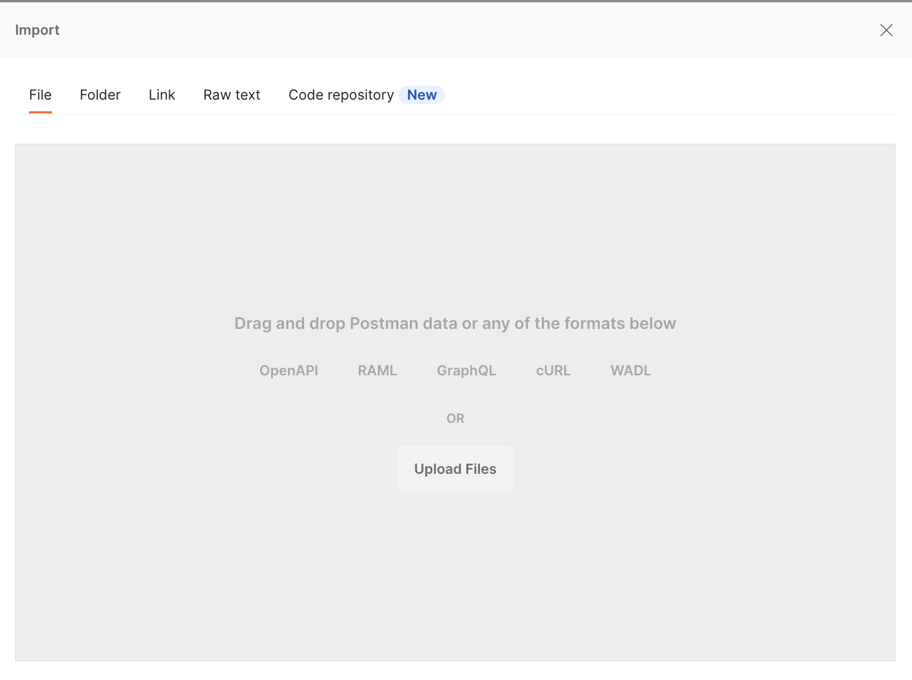
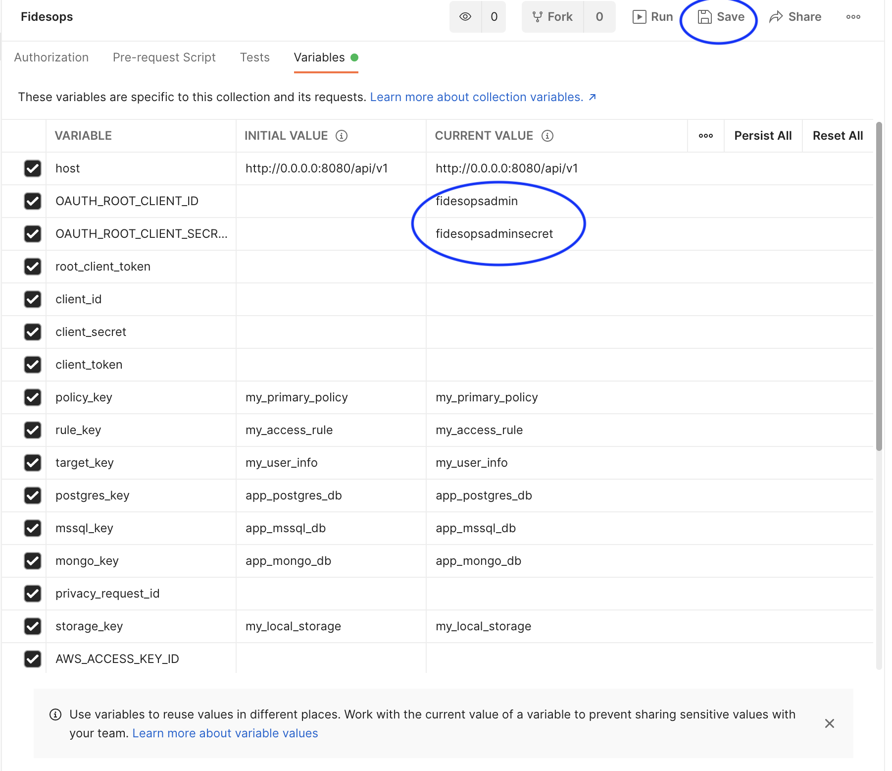
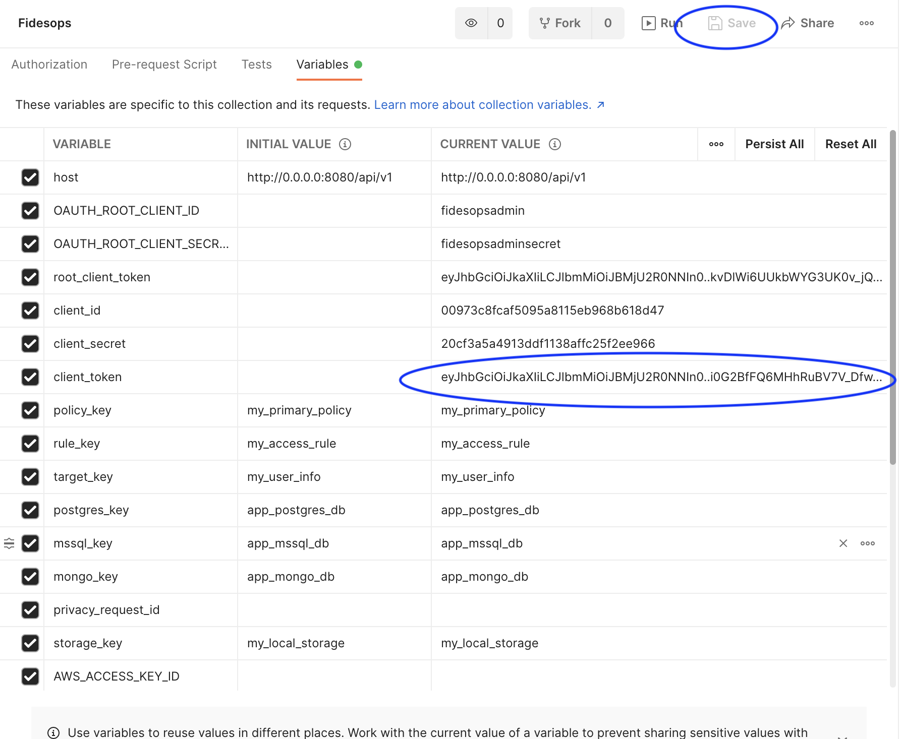
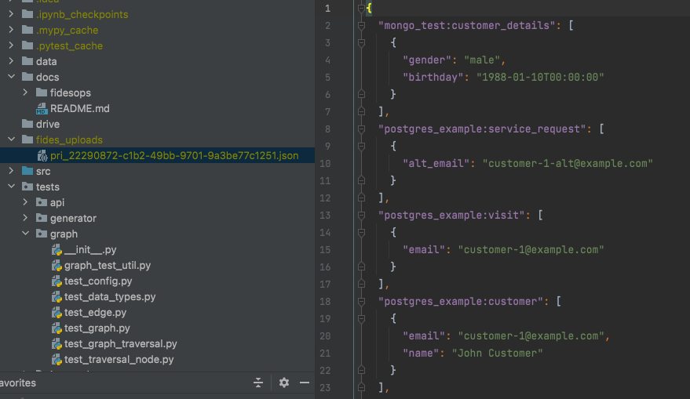

Using the fidesops postman collection
A minimal Postman collection is included to assist in setting up your fidesops configurations, and in executing example access and erasure privacy requests against mock external databases.
Loading the collection
- Get Postman
-
Postman > File > Import

-
Upload the Fidesops collection found in
docs/fidesops/docs/postman/Fidesops.postman_collection.json
-
Click on the imported
fidesopscollection in the left pane and then findVariablesto editfidesopscollection variables.- Some variables are populated for you, and some will be added in this guide's next steps.

-
Add your
OAUTH_ROOT_CLIENT_IDandOAUTH_ROOT_CLIENT_SECRETunderCURRENT VALUE.fidesopsadminandfidesopsadminare default configurations for testing, found in yourfidesops.toml. Add the appropriate values for your instance if they differ.- Important: Click
Save!

Bring up local servers and mock databases
- Run
make integration-envin your terminal.- This brings up the
fidesopsserver,redis, thefidesopspostgres database, and some mock external databases likemongodb_exampleandpostgres_example. These mock databases are pre-populated with test data to represent your datastores.
- This brings up the
The following list of requests is kept in the Minimum API calls to create an Access Privacy Request folder. Some of the returned data will need to be saved as additional variables for use in other steps.

Saving Authentication variables
-
Click on the
Get Root Client Tokenrequest, and clickSendto send aPOSTrequest to fidesops to create a root token.
-
Copy the
access_tokenreturned in the response body, and paste it as theCurrent Valueofroot_client_tokenin Fidesops variables.- Important: Click
Save!


- Important: Click
-
Similarly, click on
Create Client, and clickSendto send aPOSTrequest to fidesops to create a new client.- Copy the
client_idandclient_secretand paste intoCurrent Valueslots in Fidesops variables and click "Save".
- Copy the
-
Finally, click on the
Get Client Tokenrequest, and clickSendto send anotherPOSTrequest to fidesops. This will create a token for the client made in the previous step.
- If you click on Body, you can see that the
client_idandclient_secrethave been added as form data for you.
- If you click on Body, you can see that the
-
Save the returned token under
client_tokenin the Fidesops variables. Theclient_tokenwill be automatically passed into the rest of your requests as the Bearer Token.
Building out remaining privacy request configuration
Run through the remaining requests in the Minimum API calls to create an Access Privacy Request folder. Because variables are automatically being populated for you, you should be able to click on each request, clicking Send for each one.
Inspect the Body of each request to see what is sent to fidesops:
- Specify where your data is going:
- SEND
Create/Update Storage- Local Storage Config - Sets up a local folder for uploading your privacy request results (local testing only)
- SEND
- Configure what data you care about, and what to do with it:
- SEND
Create/Update Policies- Creates a Policy to handle Privacy Requests - SEND
Create/Update Access Rule- Defines anaccessRule on the previous Policy, which specifies results will be uploaded to the configured local storage - SEND
Create/Update Rule Targets- Specify a RuleTarget that says to will return data that has been marked as having auser.provided.identifiabledata category
- SEND
- Create ConnectionConfigs, and add connection secrets for the
postgres_exampleandmongodb_examplemock databases:- SEND
Create/Update Connection Configs: Postgres - SEND
Create/Update Connection Configs: Mongo - SEND
Update Connection Secrets: Postgres - SEND
Update Connection Secrets: Mongo
- SEND
- Add annotations of the Postgres and Mongo datastores:
- SEND
Create/Update Postgres Dataset - SEND
Create/Update Dataset Mongo
- SEND
API calls to additional supported datastores (MsSQL, MySQL) are in separate folders within the collection.
Run a privacy request
You have now completed the basic configuration required to create an Access Request.
-
SEND
Create Access Privacy Requests- If "succeeded", note the "id" that is returned. Succeeded means the privacy request has been created and is pending, not that its execution is complete.

-
Check your local
fides_uploadsfolder, configured earlier, to see access request results.- This is run asynchronously, so it may take a few moments to complete. This particular request should have retrieved data from both the
postgres_exampleandmongodb_exampledatabases with theuser.provided.identifiabledata_category

- This is run asynchronously, so it may take a few moments to complete. This particular request should have retrieved data from both the
Next steps
- Check out other requests in the collection!
- The
Calls to create an Erasure Requestfolder walks you through configuring a separate erasure policy, and executing an erasure request.
- The
Note that these erasure requests will mask data in your connected datastores (postgres_example and mongo_example here. If you connect your own live databases, data may be deleted.
Happy experimenting!